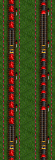
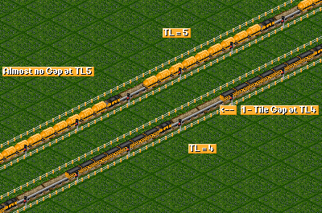

Even or Odd – About Tilelengths

Whenever starting a new game, be it local or on #openttdcoop, one important question to be cleared before starting to build the network always is: “What tilelength (TL) are we going to use for our trains?”.The chosen setting will mostly depend on the size of the map, as you don’t want to have a hundreds train servicing a single coal mine on a 2048*2048 map. However, there is a great difference between using even tilelengths such as 4, 10 or 20 and odd ones like 5 or 11.
The patch setting “When dragging, place signals every: X tiles” should always be set to “2” when playing on #openttdcoop, and most players will also use this setting if playing alone. If dragging signals, you will always have one piece of track with a signal on it followed by one without one and so on.
Now, if trains are jamming up somewhere in the network, for example behind a full station, those trains should block as little space as possible, so that they won’t for example block the mainline.
As you can see in the first screenshot, with signals every 2 tiles, the trains with tilelength 5 (left) fit almost perfectly in between the signals. However, the TL4-trains (right) always have a gap of more than one tile between them and need as much space as the TL5-trains. To fix that, you would have to place additional signals in the gaps, which might look ugly (especiall for straight track, see below) and is a lot of work, as you would have to do it manually.
In the first screenshot, you have seen what happens with diagonal track, now the second picture shows you that the effect is the same with straight track.

You can compare any odd and even tilelength, there will always be a greater gap at the even tilelength. This leads me to the conclusion that it might be better to use odd tilelengths rather than even ones, if nothing speaks against it.
There isn’t a big difference in carried cargo if using tilelength 15 or 13 instead of 14, but you will have a better usage of track space. To convince people to use tl 5 or 3 instead of 4 might be more difficult, as this makes quite a difference, however, i would still strongly suggest to always use odd tilelengths – maybe even in all #openttdcoop games? Tell me what you think!
I also created a wiki-article about it – have a look if you want!
Categories: Community News, Coopetition, Development, OpenTTD, Tutorial
tneo February 9, 2008 17:41
Although I can understand the logic behind this, I don’t really think it matters much to have 1 tile gaps in between trains when they are stopped. When trains are in motion, then there is a gap in between as well.
Sedontane February 9, 2008 17:55
Personally I would have no problem and the evidence speaks for itself. Odd tile lengths FTW on #openttdcoop
Mucht February 9, 2008 21:23
Nice post! Thx for the analysis!
XeryusTC February 11, 2008 07:40
I’ve always prefered to use the odd train lengths. Some people might have noticed that I’ve almost always used TL 3 or 5 on my plans in stead of TL 2/4/6. The reason is the same as yours, there is less space left between signals.
Something like this seems to come with my signalling perfectionism. If you haven’t noticed what it is yet then you are not around long enough ;).
Ammler February 11, 2008 11:52
Nice article!
Hmm, I am not sure, if you really tested it on a full crowded running game. Not sure, if its really better with this small gap.
I would really like to see a running example, which shows the advantage of small gaps.
Adm.Spock February 11, 2008 21:28
Maybe construct a game on a small map with even TL:4 see how much cargo is carried. While constructing leave one tile extra on stations to lengthen to the odd TL:5. Then see how much cargo is carried with TL:5?
This in my mind would constitute a “real life” test for this thesis.
Nobody February 12, 2008 17:00
I’ve made such a test a few days ago, but with three identical setups, built side by side on a same map (one company for each TL). Higher TL always means more cargo transported, whatever the TL, odd or even. Lower TL always means a worst engine(s)/wagons ratio,.. and more tracks, more platforms to avoid queues while moving the same amount of cargo.
With dual engines, to move 120 wagons we need :
– 20 trains at TL 4 (80 tiles)
– 15 trains at TL 5 (75 tiles)
– 12 trains at TL 6 (72 tiles)
– 10 trains at TL 7 (70 tiles)
But then, to scramble the maths, depending on the train set, we can have single/dual engines at lower TL. And still, using odd or even TL, there is a 2 tiles gap between trains when they are queuing…
Ammler February 13, 2008 13:49
of course, those odd lengths has advantage when queuing, but we don’t like waiting trains, we like to reach high cap networks with RUNNING trains.
Even or odd: the perfect join at #openttdcoop January 2, 2009 20:12
[…] in februari, Tim blogged about the differences between even and odd train lengths. This post posed it was better to use odd train length because they use less space when […]